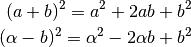

Contents
KMeans for Stars¶
KMeans for stars is a python tool kit developed to apply K-means (MacQueen, 1967) clustering in astrophysics. This tools ware previously used in:
- Sánchez Almeida et al. (2016) - Search for Extremely Metal-poor Galaxies in the Sloan Digital Sky Survey (II): high electron temperature objects
- Ordovás-Pascual & Sánchez Almeida (2014) - A fast version of the k-means classification algorithm for astronomical applications
- Sánchez Almeida & Allende Prieto (2013) - Automated unsupervised classification of the Sloan Digital Sky Survey stellar spectra using k-means clustering
- Morales-Luis et al. (2011) - Systematic search for extremely metal poor galaxies in the Sloan Digital Sky Survey
- Sánchez Almeida et. al (2010) - Automatic Unsupervised Classification of All Sloan Digital Sky Survey Data Release 7 Galaxy Spectra
- Sánchez Almeida et. al (2009) - Search for Blue Compact Dwarf Galaxies During Quiescence. II. Metallicities of Gas and Stars, Ages, and Star Formation Rates
- Sánchez Almeida & Lites (2000) - Physical Properties of the Solar Magnetic Photosphere under the MISMA Hypothesis. II. Network and Internetwork Fields at the Disk Center

(x2 + 2)2Introduction¶
Contour diagrams in the Teff x MH space. Different colors are used to distinguish classes, there is any touching borders with the same color. Each class is represented by five color shades, from dark to light, the shades enclose 15%, 30%, 45% and . The groups are parted in four plots minimizing superposition of classes. Panel a shows groups 0, 1, 4 and 5, panel b groups 7, panel c groups 2 and 3, and panel d shows group 6. Except of panel b , which has its classes identified as in the legend box, each class is tagged with a floating label in the form G X C XX , C referring to class and G to its group.
Documenting objects¶
One of Sphinx’ main objectives is easy documentation of objects (in a very general sense) in any domain. A domain is a collection of object types that belong together, complete with markup to create and reference descriptions of these objects.
The most prominent domain is the Python domain. To e.g. document the Python
built-in function enumerate(), you would add this to one of your source
files:
.. py:function:: enumerate(sequence[, start=0])
Return an iterator that yields tuples of an index and an item of the
*sequence*. (And so on.)
This is rendered like this:
-
enumerate(sequence[, start=0])¶ Return an iterator that yields tuples of an index and an item of the sequence. (And so on.)
The argument of the directive is the signature of the object you describe, the content is the documentation for it. Multiple signatures can be given, each in its own line.
The Python domain also happens to be the default domain, so you don’t need to prefix the markup with the domain name
Test code input¶
Run:
from KMeans impor assign_array
assign_array(Centres, Your_data, i_worker, output)
def assign_array(clusters_tmp, fullset, i_worker, output):
"""Assign vectors to classes minimizing euclidean distances.
This line is run in parallel.
Parameters
----------
clusters_tmp : 2D array-like, shape=(n_clusters, n_features)
Array with the partial cluster centers (n_clusters, n_features).
fullset : 2D array, shape=(n_samples, n_features)
Array with all objects in to be classified.
i_worker : int
Identifier to the ith job. As it runs in parallel is important to index each result.
output : object type
Object keeping the results to each job.
Returns
-------
The return in this function is implicit as output attributes.
The output is a list (n_samples + 1) witch the first value correspond to ith job and other values are
the classification of the objects in the sample.
"""
output.put([i_worker] + [(((clusters_tmp - line)**2).sum(axis=1)).argmin() for line in fullset])
Printing some interactive coding:¶
>>> 1+1
2
Some text that requires a footnote [1] .
Footnotes
| [1] | Text of the first footnote. |